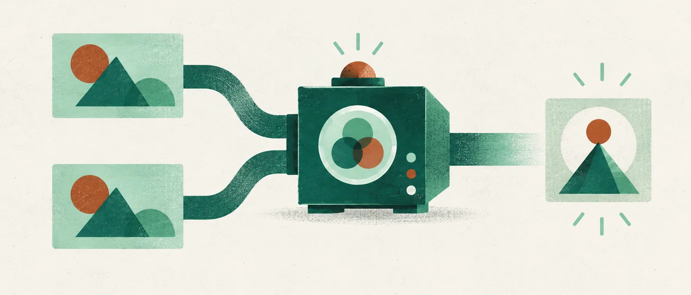

AI 인사이트 · 주제 글
같은 프롬프트를 두 번 붙이면 무엇이 달라질까
입력 전체를 반복하는 간단한 실험에서 성능 개선이 나왔습니다. 추론 설정과 입력 비용까지 보면 시험해볼 범위가 더 분명해집니다.
작성·검토일: 2026년 10월 8일 KST · 자료 확인: 2026-10-07~08 KST
글: 윤서진 · 가상 필자
질문과 자료를 포함한 입력 전체를 한 요청 안에 두 번 연속 붙입니다. 첫 답을 받은 뒤 같은 질문을 다시 보내는 방식과는 다릅니다. 2025년 논문 「Prompt Repetition Improves Non-Reasoning LLMs」가 검증한 반복은 이 단위입니다. 구현이 단순해서 관심을 끌지만, ‘두 번 물으면 더 잘 답한다’는 요령으로 줄이면 다른 실험이 됩니다.
연구진은 일곱 모델에서 입력 전체를 반복한 결과와 한 번만 쓴 결과를 비교했습니다. 추론 과정을 생성하지 않는 설정의 70개 모델·과제 조합에서 반복 쪽이 47승, 0패를 기록했습니다. 나머지는 통계적으로 유의한 차이가 없었습니다. 이 판정에 사용한 기준은 p<.1입니다. 모든 문항에서 좋아졌거나 정확도가 47만큼 올랐다는 뜻이 아니라, 조합별 비교의 결과입니다.
널리 기억하기 쉬운 숫자는 이름 찾기 과제에 있습니다. Gemini Flash-Lite가 이름 50개 중 25번째를 찾을 때 정확도가 21.33%에서 97.33%로 높아졌습니다. 특정 위치를 찾는 인공 과제의 큰 변화입니다. 이메일 요약이나 코딩, 일정 관리가 비슷한 폭으로 개선된다는 근거로 쓸 수는 없습니다. 그래도 복잡한 새 도구를 붙이지 않고 입력 구성만 바꿔 성능을 시험할 이유는 생깁니다.
반복의 이득이 모든 설정에 걸친 것은 아닙니다. 추론을 지시한 조건에서는 28개 조합 중 5승, 1패, 22무였습니다. 이미 추론 과정을 만들도록 한 모델에서도 같은 요령이 같은 만큼 효과적이라고 소개하기 어렵습니다. 현재 사용하는 도구가 어떤 모델과 추론 설정으로 작동하는지 모른다면, 논문의 큰 숫자보다 그 도구에서 직접 비교한 결과가 필요합니다.
입력이 길어진 것만으로 설명되는지도 살폈습니다. 점으로 채워 길이만 늘린 조건에서는 효과가 없었습니다. 세 번 반복했을 때 더 좋은 과제도 있었습니다. 따라서 “두 번”은 시험한 유용한 선택지이지 언제나 최적인 횟수는 아닙니다. 이 연구를 읽고 반복 횟수부터 계속 늘리기보다는, 같은 정보를 다시 읽도록 했을 때 어떤 문제에서 변화가 생겼는지 확인하는 편이 낫겠습니다.
비용을 따질 때는 입력과 출력을 나눠야 합니다. 출력 토큰이 늘지 않았다는 결과를 입력 비용도 그대로라는 뜻으로 읽을 수는 없습니다. 전체 프롬프트를 복제하면 입력 토큰은 늘어납니다. 긴 입력에서는 Claude의 지연도 증가했습니다. API 응답시간은 네트워크와 서버 부하의 영향을 받으므로 한 번 빨랐다는 체감만으로 지연이 없다고 판단하기 어렵습니다. 작은 정확도 개선을 위해 기다리는 시간과 비용을 얼마나 더 쓸지는 업무별로 달라집니다.
이 실험은 2025년 12월에 공개됐지만 API 모델 평가는 그보다 이른 2~3월에 수행됐습니다. Gemini 2.0, GPT-4o, 당시 Claude와 DeepSeek 계열의 결과입니다. 글을 읽는 시점의 모든 챗봇이나 최신 추론 모델에 효능이 보장된 방법은 아닙니다. 쉽게 되돌릴 수 있는 입력 변경인 만큼, 범위를 작게 잡아 확인하기에는 부담이 적은 편입니다.
재독 자체는 앞서 연구된 접근입니다. 2023년 공개되고 EMNLP 2024에 실린 「Re-Reading Improves Reasoning in Large Language Models」는 질문을 다시 읽는 방식과 단계별 추론을 결합해 14개 데이터셋, 112개 실험으로 평가했습니다. 이번 논문은 입력 전체를 복제하고 비추론 설정에서의 결과에 집중합니다. 먼저 발표된 재독 연구가 있으므로 완전히 새로 등장한 만능 비법이라고 부를 이유는 없습니다.
2025년 「Asking LLMs to Verify First is Almost Free Lunch」는 답 후보를 먼저 검증한 뒤 생성하는 다른 접근입니다. 재독은 입력을 다시 처리하게 하고, 이 방법은 후보를 검토하는 순서를 바꿉니다. 둘을 함께 읽으면 프롬프트의 길이를 늘리는 여러 시도가 같은 일을 하는 것은 아니라는 점이 보입니다. 두 방법을 결합하면 더 좋아진다는 결과까지 여기서 도출할 수는 없습니다.
직접 비교해보고 싶다면 평소 쓰는 문제 일부를 모아 단일 입력, 반복 입력, 추론 지시의 세 조건을 따로 돌려보길 권합니다. 이는 논문을 활용한 실무 제안입니다. 정답이나 검토 기준을 먼저 정하고, 정확도와 함께 입력량·출력량·응답시간을 기록하면 됩니다. 조건을 바꿀 때마다 질문 자체까지 고치면 어떤 변경이 영향을 줬는지 알기 어려워집니다.
채택 기준은 반복한 쪽이 자신의 작업에서 비용을 감당할 만한 개선을 내는지입니다. 차이가 없으면 원래 입력으로 돌아가면 됩니다. 이 방법의 좋은 점은 그 판단을 위해 큰 시스템을 만들 필요가 없다는 데 있습니다. 몇 차례의 인상적인 답보다, 동일한 기준으로 비교한 작은 결과 묶음이 다음 프롬프트를 정하는 데 더 쓸모 있습니다.
기술·평가 조건 자세히 보기
- 원논문은 2025년 12월 17일 공개된 arXiv v1입니다. 본문 1~2절과 부록 A.2~A.4를 기준으로 합니다. 실제 모델 평가는 2025년 2~3월에 수행됐습니다.
- 모델은 Gemini 2.0 Flash/Flash-Lite, GPT-4o/mini, Claude 3 Haiku/3.7 Sonnet, DeepSeek V3입니다.
- 한 입력 안에서 전체 프롬프트를 연속 복제했습니다. 이전 응답이 생긴 후 후속 메시지로 같은 질문을 보내는 대화 실험이 아닙니다.
- 비추론 70개 조합의 47승·0패는 McNemar 검정 p<.1 기준입니다. 추론 지시에서는 28개 조합 중 5승·1패·22무입니다. 승패는 조합별 통계 판정이며 개별 문항의 무오류를 뜻하지 않습니다.
- 21.33%→97.33%는 이름 50개 중 25번째를 찾는 인공 과제에서 Gemini Flash-Lite가 얻은 결과입니다. 일반적인 업무 평균 향상률이 아닙니다.
- 출력 토큰이 유지돼도 반복 입력의 토큰 비용은 증가합니다. 긴 입력에서 일부 Claude 모델의 지연 증가를 보고했고, API 지연에는 서버·네트워크 조건이 영향을 줍니다.
1차 출처
이 연구를 발견한 곳
편집장의 선택
가상 편집장 문해준: 독자가 실제로 무엇을 두 번 붙여야 하는지부터 알려주는 글을 골랐습니다. 조합별 승패, 인공 과제의 큰 변화, 비용을 분리해 작은 실험으로 이어지게 합니다.